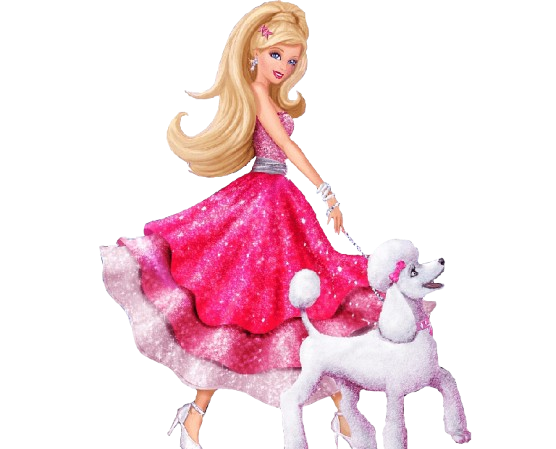
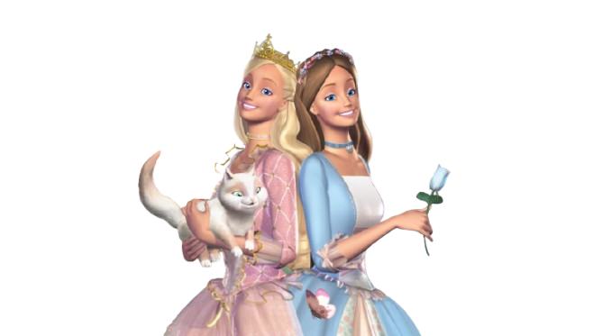

Sobre a Barbie
A personagem querida por todos
Desde seu lançamento em 1959 pela Mattel, a Barbie se tornou um ícone cultural e um símbolo de empoderamento e criatividade. Mais do que uma simples boneca, ela representa a ideia de que qualquer pessoa pode ser o que quiser. Ao longo das décadas, a Barbie assumiu inúmeras profissões, de médica a astronauta, inspirando gerações de crianças a sonharem grande.
Além de suas diferentes profissões, a Barbie também evoluiu para refletir melhor a diversidade da sociedade. Nos últimos anos, a linha de bonecas passou a incluir diferentes tons de pele, tipos de corpo, estilos de cabelo e características físicas, tornando-se mais representativa e acessível para crianças de diferentes origens e realidades. Essa inclusão é fundamental para que todas as crianças possam se enxergar nas bonecas e se sentirem representadas, fortalecendo a autoestima e o senso de pertencimento.
O impacto da Barbie vai muito além dos brinquedos. Ela influenciou gerações no mundo da moda, inspirou filmes, séries, livros e coleções de design, tornando-se um símbolo atemporal da cultura pop. Seu papel na sociedade continua sendo debatido e reinterpretado, especialmente com o lançamento de produções cinematográficas e colaborações com estilistas renomados, o que reforça sua presença como um elemento de inspiração para diferentes gerações.
A Barbie é, acima de tudo, uma celebração da imaginação, da independência e da capacidade de sonhar grande. Com sua história marcada por inovação e reinvenção, ela continua a ser um dos brinquedos mais amados do mundo, incentivando crianças a explorarem um universo de criatividade, autoconfiança e possibilidades ilimitadas.

